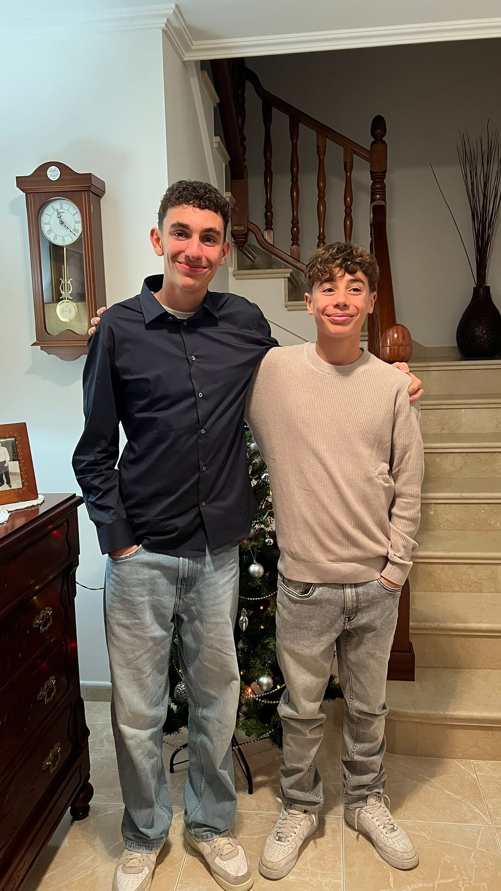

My work
Escalador
M'agraden
Des dels 7 anys practico karate, un art que m’ha ensenyat disciplina, constància i respecte. Al llarg dels anys he anat progressant per diferents cinturons i he pogut participar en exhibicions i competicions, tant dins el club com en altres tornejos locals i regionals. La pràctica regular d’aquest esport m’ha donat una bona forma física, agilitat i rapidesa, a més de coneixements tècnics sobre kates, combat i defensa personal. També m’ha permès conèixer diferents mestres i entrenadors que m’han transmès la seva experiència i m’han ajudat a millorar pas a pas. Després de molts anys d’esforç i dedicació, avui sóc cinturó negre i continuo entrenant per perfeccionar el meu nivell i ampliar les meves habilitats.
Sóc estudiant de batxillerat científic al Ramis, on cada dia m’esforço per aprendre i superar-me, especialment en les matèries científiques que més em motiven. Aquest itinerari m’ha permès aprofundir en àrees com les matemàtiques, la física, la química i la biologia, que considero fonamentals per entendre el món que ens envolta. A més, el batxillerat em dóna l’oportunitat de treballar amb un ritme més exigent, adquirir hàbits d’estudi rigorosos i preparar-me de manera adequada per als reptes acadèmics i professionals que vindran més endavant.
Al meu temps lliure m’agrada quedar amb els meus amics, passar estones divertides i compartir moments de manera relaxada. També practico altres esports a part del karate, ja que m’ajuden a mantenir-me actiu, a millorar la forma física i a aprendre noves habilitats. De vegades aprofito els moments lliures per fer activitats més tranquil·les, com escoltar música, llegir o veure sèries, depenent de l’ànim del dia.
karate
El karate és una de les meves passions principals i hi dedico gran part del meu temps lliure. M’agrada no només per la pràctica física que implica, sinó també per la disciplina i la concentració que requereix. Cada entrenament és una oportunitat per millorar tècniques com els kates, els cops i les defenses personals, així com per posar a prova la rapidesa i l’agilitat. També m’agrada aprendre sobre la història i la filosofia del karate, ja que em permet entendre millor aquest art marcial i els valors que promou.
Tinc diversos ídols dins del món del karate que m’inspiren a seguir millorant. Entre ells hi ha Damián Quintero, reconegut per la seva tècnica impecable i la seva constància; Sandra Sánchez, considerada la millor de la història en la categoria de kata femení individual; i José Manuel Egea, un dels millors esportistes espanyols de tots els temps en karate. Seguir els seus passos i veure com han evolucionat m’ajuda a motivar-me i a plantejar-me nous objectius en els meus propis entrenaments.p>
Escalador